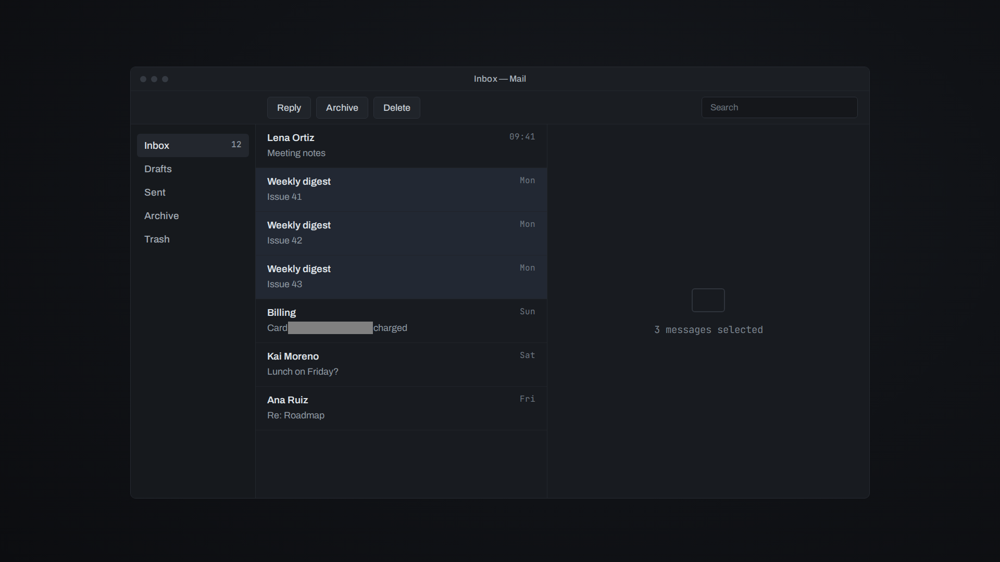

Inbox — Mail
Inbox 129
Drafts
Sent
Archive
Trash
Lena OrtizMeeting notes09:41
Weekly digestIssue 41Mon
Weekly digestIssue 42Mon
Weekly digestIssue 43Mon
BillingCard 4111 1111 1111 1111 chargedSun
Kai MorenoLunch on Friday?Sat
Ana RuizRe: RoadmapFri
Confirm
Delete 3 messages?
They will be moved to Trash.
Cancel
OK
Zero is using the computer
Zero is thinking…
Paused while you use the computer
Zero stopped. Press Ctrl+Alt+Esc to let it continue
Zero is done
App: Mail … · screen #1 (new)
Tree:
State after the action: now on screen #2 (new), window "Confirm":
State after the action: back on screen #1 (seen before), window "Inbox — Mail":
Changes since you last saw screen #1 (+ added, ~ changed, - removed). Other elements are as they were then, with the same indices.
get_app_state {"app":"Mail"}
Screenshot: not attached (pass screenshot=true for one).
No changes to the accessibility tree since the previous get_app_state.

screen #1 · Inbox — Mail

screen #2 · Confirm
user › Delete the three old digests.
get_app_state {"app":"Mail"}
click {"app":"Mail","element_index":4}
click {"app":"Mail","element_index":25}
the user stopped the agent with the emergency stop key (Ctrl+Alt+Esc). Stop here…
get_app_state {"app":"Mail"}
SEE.
UNDERSTAND.
ACT.
VERIFY.
CONTROL.
REMEMBER.
AI can see your screen.
But seeing isn't using.
Ctrl
+
Alt
+
Esc
Visible on your screen.
Readable in its source.
Zero Use Computer
OPEN SOURCE.
Read it. Run it. Change it. Ship it.
Apache-2.0·github.com/mhrsdev/zero-use-computer